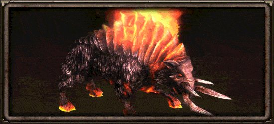
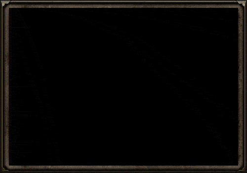

{kind=link}
{kind=link}
{kind=link}
{kind=link}
The world of Cairn is a dangerous place teeming with vicious wildlife, terrifying aether-mutated beasts, and horrors from the chthonic void. Few dare venture beyond the relative safety of hastily built walls, but those that do should be prepared to face off against deadly threats the likes of which humanity has never faced before.
Groups of cultists and outlaws, once kept in check by a society now in ruins, thrive in this depraved new world. Their despicable acts of violence and betrayal against other humans are perhaps the greatest danger of all.
What You See Is What You Get
As you travel across Cairn, you will encounter creatures, and humans, that are equipped with weapons and armor. Unlike most games though, when your foe is slain, they will drop their valuable gear for you to collect. Frequently, the items are of poor quality and will disintegrate so as not to clutter the screen, but sometimes you may find yourself facing off against a murderous outlaw carrying a sword that sparks with lightning. That is when you know you are in for a serious fight.
While the challenge may be greater, so is the reward. When you defeat this insidious lowlife, he will also drop his ill-gained Unique item. What this boils down to is that enemies can carry powerful equipment that can seriously boost their potential while also previewing to you the deadly arsenal soon to be at your disposal.
This can also really change up how you approach a fight. If a boss spawns with a weapon that burns mana, you might suddenly find yourself low on precious energy. Likewise, an enemy wearing a ring that provides high resistances might boost their survivability against your selection of spells. The possibilities are as limitless as the combinations of loot in Grim Dawn.
Hero Monsters

Hero Monsters represent the champions of the enemy and are denoted by a star over their head. The star should give you an indication that a challenging battle lies ahead. Hero Monsters come with a massive array of unique skills with which they will seek your destruction, are highly resistant to crowd control effects and take reduced damage from % of Current Life attacks. Some are represented as archetypes, while others use a custom skill-set unique to that Hero. All Hero Monsters may also use skills normally used by their non-heroic counterparts. The following are the archetypes you may encounter:
- Bruiser - takes reduced damage, deals increased damage and has a chance to stun on attacks
- Burning - deals bonus fire damage and periodically activates a ring of fire around itself
- Charger - periodically charges far away targets
- Corrupted - periodically creates an explosion of aether around itself and creates an aura which empowers itself and nearby allies with the aether
- Defender - creates an aura which reduces damage taken by itself and nearby allies and has a chance to stun on attack
- Diseased - has an aura of poisonous fumes around itself at all times and periodically creates a field of noxious poison
- Electrified - deals bonus lightning damage and periodically casts a nova of lightning orbs
- Frozen - periodically launches a freezing orb and creates an aura which bestows chilling bonuses upon itself and nearby allies
- Reflective - periodically creates a shield around itself which reflects a portion of all damage taken
- Regenerator - creates an aura which increases health regeneration for itself and nearby allies
- Shielded - periodically shields itself against magical damage and attacks with an elemental bolt
- Supporter - creates an aura which increases the damage dealt by itself and nearby allies and occasionally cast a chain heal on allies
- Swift - creates an aura which increases attack and movement speed for itself and nearby allies
- Unstoppable - deals bonus chaos damage and creates an aura which makes itself and nearby allies immune to all crowd control effects
- Voidtouched - surrounds itself with a chaotic blaze and periodically casts chaos chain lightning. Some variants can also chaos teleport onto far away targets
Whenever a hero is slain, it will spawn a loot orb. Upon breaking, the loot orb will spill out precious iron bits and a collection of items that can be of any quality. Some of the best equipment in the game can drop from Hero Monsters. They are also one of the best sources for acquiring crafting blueprints.
There are over 200 hand-crafted Hero Monsters you may encounter in Grim Dawn. Players have been slowly cataloging them in this thread on our forum.
Boss Monsters

As to be expected, Boss Monsters are the epitome of challenge in Grim Dawn and are denoted by purple names and unique appearances. They are the leaders of humanity’s foes, the monstrosities few have even seen and fewer still survived. Some Boss Monsters are humans who have forsaken their humanity for the sake of great power. Others are mythical beasts, ancient predators spoken of in legends. Then there are the Aetherial agents and Chthonian horrors, beings from beyond Cairn who have come to ravage the world for their own purposes.
Boss Monsters drop the best equipment in the game, either through a locked chest or a loot orb similar to that of Hero Monsters. Many Boss Monsters can also drop equipment that is unique only to them, making hunting them down a worthy endeavor. But earning that loot will not be easy. Boss Monsters are armed with hard-hitting spells, strong defenses and near-immunity to crowd control effects and % Current Life attacks.
There are dozens of bosses to discover in the world of Cairn, each presenting a unique challenge to test your skill.